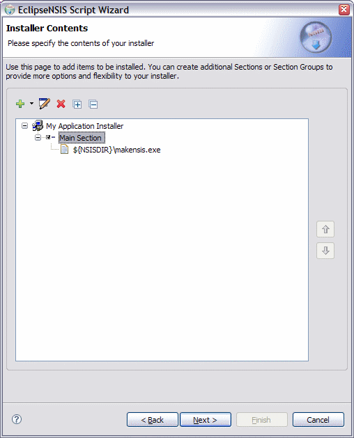
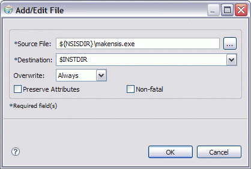
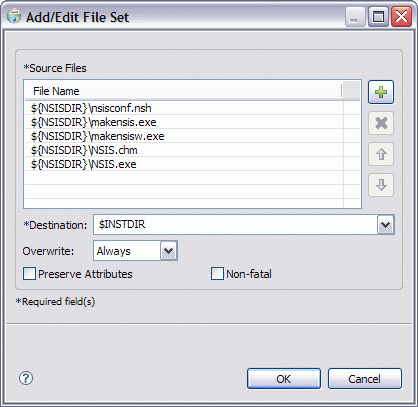
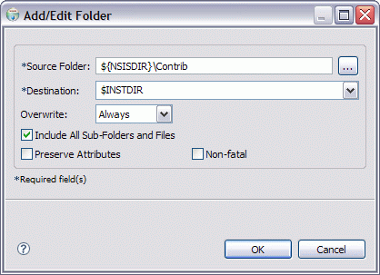
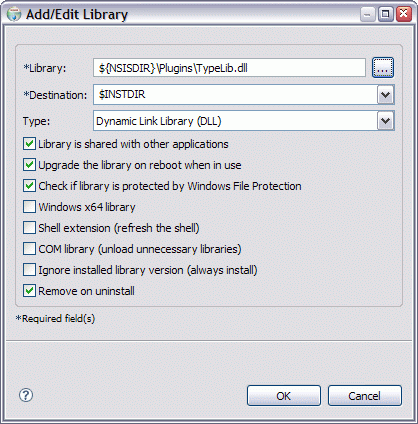
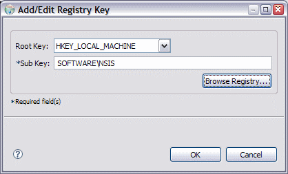
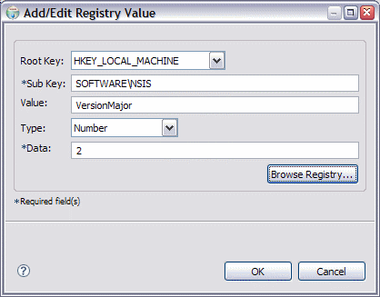
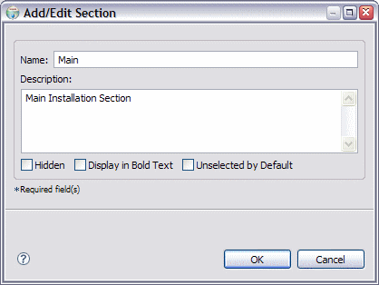
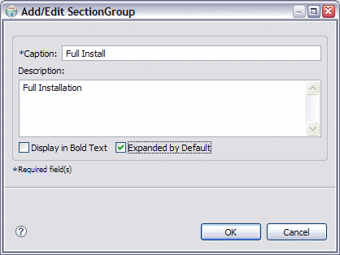

Script Wizard
Installer Contents
This page is used to manage installer contents. This consists of one or more of the following items:
These items can be added, edited or deleted using the supplied toolbar. The toolbar popups change depending upon the type of item which is currently selected. The toolbar functions can also be accessed as a context menu by right-clicking on an item in the tree. The installer contents are installed in the sequence in which they are shown in the tree. Additionally, the installer contents can be manipulated using drag & drop.

- Installer Contents
- A visual representation of the installer contents in a tree format. ← Back
- Add
- Add an installation item, Section or SectionGroup/SubSection. ← Back
- Edit
- Edit the currently selected item. ← Back
- Delete
- Delete the currently selected item. ← Back
- Expand All
- Expand all nodes in the tree. ← Back
- Collapse All
- Collapse all nodes in the tree. ← Back
- Move Up
- Move the selected items higher up in the installation sequence. ← Back
- Move Down
- Move the selected items lower down in the installation sequence. ← Back
Installer Items
The various installer items and the dialogs used to add and edit them are described in this section.
File
This consists of a single file on the filesystem.

- Source File
- The source file name. ← Back
- Destination
- The installation destination folder. ← Back
- Overwrite
- The overwrite action to take if the file already exists on the installation filesystem. ← Back
- Preserve Attributes
- If this option is selected, the installer will attempt to preserve the attributes of the source file. ← Back
- Non-Fatal
- If this option is selected, the compiler will issue a warning instead of an error if the source file is not found. ← Back
File Set
This consists of a set of files on the filesystem which will be installed in the same destination folder.

- Source Files
- The source file names. These can be from different locations. ← Back
- Add
- Add one or more source files by browsing the filesystem. ← Back
- Delete
- Delete the selected source file(s) from the installer. ← Back
- Up
- Move the selected file(s) higher in the installation sequence. ← Back
- Down
- Move the selected file(s) loweer in the installation sequence. ← Back
- Destination
- The installation destination folder. ← Back
- Overwrite
- The overwrite action to take if any of the files already exists on the installation filesystem. ← Back
- Preserve Attributes
- If this option is selected, the installer will attempt to preserve the attributes of the source files. ← Back
- Non-Fatal
- If this option is selected, the compiler will issue a warning instead of an error if any of the source files is not found. ← Back
Folder
This consists of a single folder on the filesystem. It can, however, be installed recursively, i.e., all its sub-folders and files will be installed as well.

- Source Folder
- The source folder name. ← Back
- Destination
- The installation destination folder. ← Back
- Overwrite
- The overwrite action to take if the folder, or any of its children, already exist on the installation filesystem. ← Back
- Include All Sub-Folders and Files
- Option to recursively install the folder. ← Back
- Preserve Attributes
- If this option is selected, the installer will attempt to preserve the attributes of the source folder and its files and subfolders (if applicable). ← Back
- Non-Fatal
- If this option is selected, the compiler will issue a warning instead of an error if the source folder is not found. ← Back
Library
This consists of a library file on the filesystem which is to be installed on the installation system. This option is only available in NSIS 2.01 or better, which include the DLL/TLB Library Setup system.

- Library
- The library that is to be installed. ← Back
- Destination
- The installation destination folder.← Back
- Type
- The type of library to be installed. Valid types are described in the NSIS documentation. ← Back
- Upgrade the Library on Reboot when in Use
- If this option is selected, the library will be installed/upgraded after reboot if it is in use. Otherwise a warning will be shown and the user will have to close all applications using the library before continuing. ← Back
- Check if Library is Protected by Windows File Protection
- If this option is selected, the installer will check if the library is protected by Windows File Protection. If the library is protected, then it will not be installed. If the option is not selected, the installer will install the library- however if it is protected, then Windows File Protection will replace it with a cached copy. ← Back
- Windows x64 Library
- Indicates that the library is a 64-bit (x64) library. This option is only available in NSIS 2.26 or higher and is only available if the target platform for the installer is specified to be Any. ← Back
- Refresh the Shell
- If this option is selected, the installer calls SHChangeNotify with SHCNE_ASSOCCHANGED flag after library registration. This option should be used to refresh the shell when installing a shell extension or when changing file associations. ← Back
- Unload all Unnecessary Libraries from Memory
- If this option is selected, the installer calls CoFreeUnusedLibraries after library registration. This option should be used to unload all unnecessary libraries from memory when installing COM libraries. ← Back
- Ignore Installed Version (Always Install)
- If this option is selected, the installer installs the library without checking if the library is already installed. This may result in a newer version of the library being overwritten by the installer. This option is only available in NSIS 2.26 or higher. ← Back
- Remove on Uninstall
- If this option is not selected, the library will not be removed upon uninstallation. This option should be unselected for common or important system libraries. It is selected by default. ← Back
Shortcut
This represents a shortcut to be created on the installation system. The shortcut can either to be a file on the installation system or a URL.

- Location
- The location on the installation system in which the shortcut will be created. This can either be the Application Start Menu Group (if available) or an alternate location. ← Back
- Name
- The shortcut name. ← Back
- Shortcut Type
- The shortcut type- File or URL. ← Back
- URL
- The shortcut destination URL. This is enabled if the selected shortcut type is URL. ← Back
- Path
- The shortcut destination file. This is enabled if the selected shortcut type is File. ← Back
Registry Key
This represents a Windows registry key to be created on the installation system.

- Root Key
- The root key. This must be one of the root keys supplied by windows, e.g., HKEY_LOCAL_MACHINE, HKEY_CURRENT_USER, etc. ← Back
- Sub Key
- The name of the sub key which will be created. This can be a multi-level subkey, with its parts separated by a '\' character. ← Back
- Browse Registry
- Browse the Windows registry to select a registry key. Windows shell folder names (e.g., $WINDIR, $SYSDIR, etc) are automatically substituted in imported entries. ← Back
Registry Value
This represents a Windows registry value to be created on the installation system.

- Root Key
- The root key. This must be one of the root keys supplied by Windows, e.g., HKEY_LOCAL_MACHINE, HKEY_CURRENT_USER, etc. ← Back
- Sub Key
- The name of the sub key in which the registry value will be created. This can be a multi-level subkey, with its parts separated by a '\' character. If it does not exist it will be created. ← Back
- Value
- The name of the registry value which will be created. ← Back
- Type
- The registry value type. String (REG_SZ), expanded string (REG_EXPAND_SZ), binary (REG_BINARY) and numeric (REG_DWORD) value types are supported. ← Back
- Data
- The actual data to be written to the registry value. ← Back
- Browse Registry
- Browse the Windows registry and select a registry value. Windows shell folder names (e.g., $WINDIR, $SYSDIR, etc) are automatically substituted in imported entries. ← Back
Section
This represents a logical grouping of one or more files, folders, file sets, shortcuts, registry keys or registry values.

- Name
- The Section name. If this is left blank, the Section is automatically hidden. ← Back
- Description
- The Section description. This is only visible for Modern UI installers. ← Back
- Display in Bold Text
- Flag indicating whether the Section should be displayed in bold type. This is a useful way to attract the user's attention to a particular Section. ← Back
- Unselected by Default
- Flag indicating whether the Section should be unselected by default- i.e., the default behavior is NOT to install the Section contents. ← Back
SectionGroup/SubSection
This represents a logical grouping of one or more Sections or SectionGroups/SubSections. In NSIS versions prior to 2.05, SectionGroups are called SubSections.

- Caption
- The caption of the SectionGroup. ← Back
- Description
- The SectionGroup description. This is only visible for Modern UI installers. ← Back
- Display in Bold Text
- Flag indicating whether the SectionGroup should be displayed in bold type. This is a useful way to attract the user's attention to a particular SectionGroup. ← Back
- Expanded by Default
- Flag indicating whether the SectionGroup is expanded by default, i.e., its component Sections/SectionGroups are visible to the user. ← Back
Drag & Drop Support
Items can be moved from one location to another within the contents by using drag and drop. The drop icon will change depending upon whether the drop target is valid for the type of items being dragged. If the Ctrl key is held down while dragging, copies of the dragged items are created, instead of being moved. Items can even be added to the installer contents by dragging and dropping from Windows Explorer or the Desktop. EclipseNSIS deduces the item type as follows:
- If the target item is a File Set and all dragged items are files, then all dragged items are added as files within the File Set.
- If the target item is a Section, then files are added as File items and folders are added as Folder items.
- If the target item is a Section, and a dragged item is a valid registration file (.REG extension), then its contents are added as Registry Key and Registry Value items. If a dragged file has the .REG extension, but does not follow the valid format for a registration file, it is added as a File item.
Previous | Contents | Next
Copyright © 2004-2010 Sunil Kamath (IcemanK).